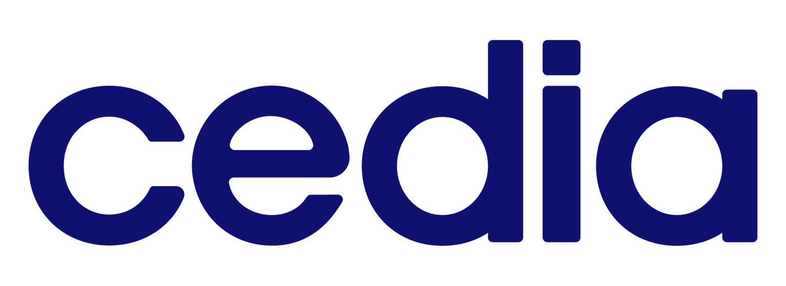

Composición de los ingresos
| Año | Paquete institucional | Fuera del paquete | Participación fuera del paquete |
|---|---|---|---|
| 2025 | USD 645.323,58 | USD 648.861,95 | 50,14 % |
| 2026 | USD 509.448,83 | USD 711.515,55 | 58,27 % |

Academia / Dirección Ejecutiva| Año | Paquete institucional | Fuera del paquete | Participación fuera del paquete |
|---|---|---|---|
| 2025 | USD 645.323,58 | USD 648.861,95 | 50,14 % |
| 2026 | USD 509.448,83 | USD 711.515,55 | 58,27 % |
Fuera del paquete suma BD, Servicios a otras áreas y Proyectos. La fuente no especifica las fechas de corte de los periodos comparados.
59 instituciones en el segmento
8 instituciones en el segmento
Cada barra muestra la proporción de instituciones del segmento con uso documentado del servicio. El paquete Universidades incluye distintos tipos de miembros. La matriz de uso carece de fecha de corte.
Estas ofertas están pendientes de cierre y se excluyen de los ingresos registrados.